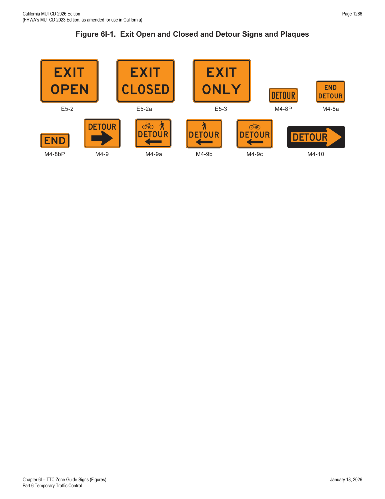
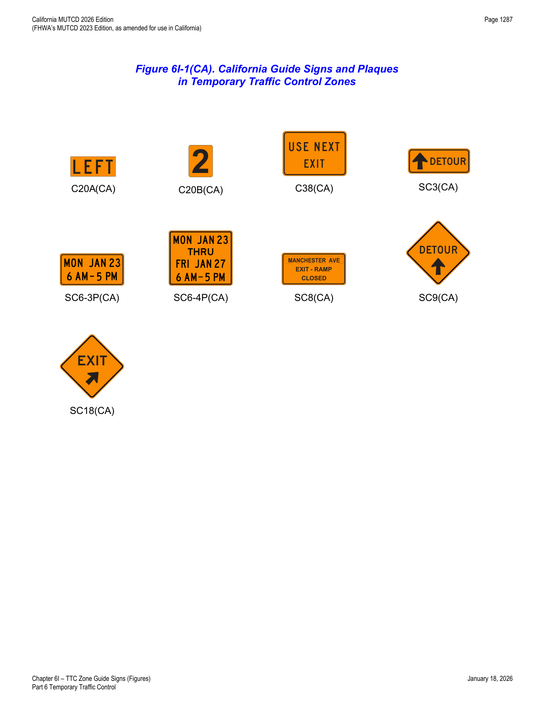
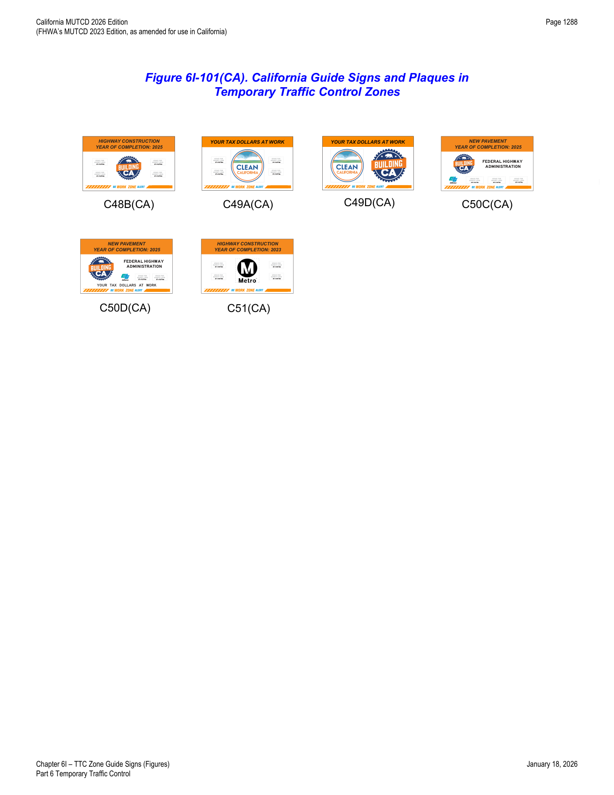

Part 6 · Temporary Traffic Control · Chapter 6I
TTC Zone Guide Signs
Guide signs used within temporary traffic control (TTC) zones — detour and route-change signing, exit open/closed panels, and California's construction-funding identification sign series — including the black-on-orange color convention that distinguishes temporary guide signs from their permanent green-and-white counterparts.
6I.01Guide Signs — General
- 01Guide signs along highways provide road users with information to help them along their way through the TTC zone. The design of guide signs is presented in Part 2.
- 02The following guide signs should be used in TTC zones as needed: (A) standard route markings where temporary route changes are necessary, (B) directional signs and street name signs, and (C) special guide signs relating to the condition or work being done.
- 03If additional temporary guide signs are used in TTC zones, they shall have a black legend and border on an orange background.
- 04Guide signs used in TTC incident management situations may have a black legend and border on a fluorescent pink background.
- 05When temporary directional signs and temporary street name signs are used in conjunction with detour routing, these signs may have a black legend and border on an orange background.
- 06When permanent directional signs or permanent street name signs are used in conjunction with detour signing, they may have a white legend on a green background (see Sections 2D.35 and 2D.45).
- 07The sizes for TTC guide signs shall be as shown in Table 6I-1.
- 08Refer to FHWA's List of Known Errors for an error in labeling Paragraph 7. Refer to Section 1A.04 for more details.
- 09Some of the California guide signs used in TTC zones are shown in Figure 6I-1(CA) and Table 6I-1(CA).
In practice, the orange background is the visual signal that tells a driver "this sign is temporary" — it is what separates a construction-period detour or exit-closed panel from the permanent green guide sign network it is layered over or replacing.
6I.02Detour Signs and Plaques (M4-8P, M4-8a, M4-8bP, M4-9, M4-9a, M4-9b, M4-9c, and M4-10)
- 01Each detour shall be adequately marked with standard temporary route signs and destination signs.
- 01aRefer to CVC § 21363 for detour signs.
- 02Detour signs in TTC incident management situations may have a black legend and border on a fluorescent pink background.
- 03The Detour Arrow (M4-10) sign (see Figure 6I-1) may be used where a detour route has been established.
- 04The DETOUR (M4-8P) plaque (see Figure 6I-1) may be mounted at the top of a route sign assembly to mark a temporary route that detours from a highway, bypasses a section closed by a TTC zone, and rejoins the highway beyond the TTC zone.
- 05The Detour Arrow (M4-10) sign should normally be mounted just below the ROAD CLOSED (R11-2, R11-3a, or R11-4) sign. The Detour Arrow sign should include a horizontal arrow pointed to the right or left as required.
- 06The DETOUR (M4-9) sign (see Figure 6I-1) should be used for unnumbered highways, for emergency situations, for periods of short durations, or where, over relatively short distances, road users are guided along the detour and back to the desired highway without route signs.
- 07A Street Name sign should be placed above, or the street name should be incorporated into, a DETOUR (M4-9) sign to indicate the name of the street being detoured.
- 08The END DETOUR (M4-8a) sign or the END (M4-8bP) plaque (see Figure 6I-1) may be used to indicate that the detour has ended.
- 09When the END DETOUR sign is used on a numbered highway, the sign should be mounted above a route sign after the downstream end of the detour.
- 10The Pedestrian/Bicyclist Detour (M4-9a) sign (see Figure 6I-1) should be used where a pedestrian/bicyclist detour route has been established because of the closing of a pedestrian/bicycle facility to through traffic.
- 11If used, the Pedestrian/Bicyclist Detour sign shall have an arrow pointing in the appropriate direction.
- 12The arrow on a Pedestrian/Bicyclist Detour sign may be on the sign face or on a supplemental plaque.
- 13The Pedestrian Detour (M4-9b) sign or Bicyclist Detour (M4-9c) sign (see Figure 6I-1) may be used where a pedestrian or a bicyclist detour route (not both) has been established because of the closing of the pedestrian or bicycle facility to through traffic.
- 14The DETOUR (M4-8) sign should be placed on tangent sections at intervals not to exceed 0.25 miles and at major intersections.
- 15In urban areas, the M4-8 signs may be placed at every intersection.
- 16The DETOUR with Arrow (SC3(CA)) sign (see Figure 6I-1(CA)) should be used for unnumbered highways, for emergency situations, for periods of short duration, or where, over relatively short distances, road users are guided along the detour and back to the desired highway without route markers.
- 17The (FWY) DETOUR with Arrow (SC9(CA)) sign (see Figure 6I-1(CA)) should be used to inform motorists of the direction to follow for a detour. The words FWY DETOUR may be substituted for DETOUR, where applicable.


In practice, the M4-9 family (M4-9, -9a, -9b, -9c) lets an agency signal precisely which user group has been detoured — vehicles, pedestrians and bicyclists together, pedestrians only, or bicyclists only — rather than defaulting to one generic detour sign for every facility type.
6I.03EXIT CLOSED Panel
- 01When an exit ramp is closed, an EXIT CLOSED sign panel with a black legend and border on an orange background should be placed diagonally across the interchange/intersection guide signs.
6I.101(CA)Construction Project Funding Identification Signs
- 01For use on projects with estimated contract costs of $1,000,000 or more and 60 working days or more, or 70 working days minimum when Saturdays or holidays are counted as working days, the Construction Funding Identification signs may be used to identify funding sources for a highway project. Formats of the sign series are flexible to include federal, state and/or local agency funding sources. See Figure 6I-101(CA).
- 02If used, the header panel shall include the type of project and anticipated year of completion, according to the established contract completion schedule, limited to one line each with a minimum letter size based on sign panel size and the "Standard Highway Signs and Markings" book (refer to Section 1A.11), designed to fit within the fluorescent orange portion for Building California (C48B(CA)), Federal-Aid Highway Funds - Building CA (C50(CA) Series), and Local Funds Only (C51(CA)) signs, or shall include the legend "Your Tax Dollars AT WORK" for Clean California (C49(CA) Series) signs. Installation shall be placed in advance of temporary traffic control zone signs and limited to one sign installed in each direction on up to two approaches.
- 03Information on the sign should include the type of project, such as Highway Construction, Highway Repair, Highway Improvement, Bridge Construction, Bridge Repair, or Roadside Work for C48B(CA) and C51(CA) signs.
Building California (C48B(CA)) Sign
- 04The C48B(CA) sign may be used on projects funded by State Highway Funds (Building California Funds), formerly known as Senate Bill 1. Format of this sign is flexible to include up to four funding agency pictographs. See Figure 6I-101(CA).
Clean California (C49A(CA) or C49D(CA)) Signs
- 05The C49(CA) Series signs may be used on projects funded by State General Funds (Clean California Funds), for projects that beautify and revitalize public spaces across the State. Format of these signs is flexible to include up to four funding agency pictographs. See Figure 6I-101(CA).
Federal-Aid Highway Funds - Building CA (C50C(CA) or C50D(CA)) Signs
- 06The C50(CA) Series signs may be used to identify the funding source for a project using Federal-Aid Highway Program funds. Format of these signs is flexible to include up to three funding agency pictographs. See Figure 6I-101(CA).
- 07The project description used on the C50(CA) Series signs shall be limited to the following project categories: (1) New Pavement, (2) New Carpool Lane, (3) Bridge Maintenance, (4) Bridge Restoration, (5) New Biking/Walking Paths, (6) Broadband installation, (7) Improved Drainage System.
- 08If the project scope does not fit any of the project categories, an alternate project category should be considered, such as Highway Construction, Highway Repair, Highway Improvement, Bridge Construction, or Roadside Work.
Local Funds Only (C51(CA)) Sign
- 09The C51(CA) sign may be used on projects funded by local funds only (city, county, or other funding agencies). Format of this sign is flexible to include up to four funding agency pictographs. See Figure 6I-101(CA).

In practice, only one funding-identification sign is installed per direction per approach (up to two approaches total) — these are informational/branding panels, not part of the core TTC warning sequence, so they are placed in advance of the actual TTC zone signing rather than mixed into it.
Table 6I-1TTC Zone Guide Sign and Plaque Sizes
| Sign or Plaque | Designation | Section | Conventional Road | Freeway/Expressway | Minimum |
|---|---|---|---|---|---|
| Exit Open | E5-2 | 6H.12 | 48 x 36 | 48 x 36 | — |
| Exit Closed | E5-2a | 6H.12 | 48 x 36 | 48 x 36 | — |
| Exit Only | E5-3 | 6H.13 | 48 x 36 | 48 x 36 | — |
| Detour | M4-8P | 6I.02 | 24 x 12 | 30 x 15 | — |
| End Detour | M4-8a | 6I.02 | 24 x 18 | 24 x 18 | — |
| End (plaque) | M4-8bP | 6I.02 | 24 x 12 | 24 x 12 | — |
| Detour | M4-9 | 6I.02 | 30 x 24 | 48 x 36 | — |
| Bike/Pedestrian Detour | M4-9a | 6I.02 | 30 x 24 | — | — |
| Pedestrian Detour | M4-9b | 6I.02 | 30 x 24 | — | — |
| Bike Detour (with arrow) | M4-9c | 6I.02 | 30 x 24 | — | — |
| Detour | M4-10 | 6I.02 | 48 x 18 | — | — |
Notes: (1) Larger signs may be used wherever necessary for greater legibility or emphasis. (2) Dimensions are in inches, shown as width x height.
| Sign or Plaque | Designation | Section | Conventional Road (Min.) | Expressway | Freeway | Oversized |
|---|---|---|---|---|---|---|
| LEFT (sign overlay) | C20A(CA) | 6H.07 | 16 x 7 | 19 x 8 | 19 x 8 | 33 x 10 |
| Numeral (sign overlay) | C20B(CA) | 6H.07 | 6 x 8 | 8 x 10 | 8 x 10 | 10 x 12 |
| USE NEXT EXIT | C38(CA) | 6G.101(CA) | — | 48 x 36 | 48 x 36 | — |
| DETOUR with Arrow | SC3(CA) | 6I.02 | 36 x 12 | 48 x 18 | 48 x 18 | — |
| Day - Specific Hours (plaque) | SC6-3P(CA) | 6G.101(CA) | 36 x 18 | 48 x 24 | 48 x 24 | — |
| Multiple Days - Specific Hours (plaque) | SC6-4P(CA) | 6G.101(CA) | 36 x 30 | 48 x 42 | 48 x 42 | — |
| ____ EXIT RAMP CLOSED | SC8(CA) | 6G.101(CA) | — | 84 x 42 | 84 x 42 | — |
| (FWY) DETOUR with Arrow | SC9(CA) | 6I.02 | 36 x 36 | 48 x 48 | 48 x 48 | — |
| EXIT with Arrow | SC18(CA) | 6G.101(CA) | — | 48 x 48 | 48 x 48 | — |
| Building California Sign | C48B(CA) | 6I.101(CA) | 48 x 30 | 132 x 78 | 132 x 78 | — |
| Clean California Signs | C49A(CA) & C49D(CA) | 6I.101(CA) | 48 x 30 | 132 x 78 | 132 x 78 | — |
| Federal-Aid Highway Funds-Building CA Signs | C50C(CA) & C50D(CA) | 6I.101(CA) | 48 x 30 | 132 x 78 | 132 x 78 | — |
| Local Funds Only Sign | C51(CA) | 6I.101(CA) | 48 x 30 | 132 x 78 | 132 x 78 | — |
Table 6I-1(CA). California Temporary Traffic Control Zone Guide Sign and Plaque Sizes. Dimensions in inches, width x height.
★ Key Takeaways — Chapter 6I
- Additional temporary guide signs shall be black legend/border on orange background — this distinguishes them from permanent green guide signs, except detour/street-name signs used in a permanent detour context, which may remain white-on-green.
- TTC incident management guide and detour signs may instead use a black legend/border on fluorescent pink background.
- The M4-9 detour sign family lets the agency signal the correct user group: M4-9 (general), M4-9a (pedestrian/bicyclist combined, with required arrow), M4-9b (pedestrian only), M4-9c (bicyclist only, with arrow).
- DETOUR (M4-8) signs are placed at intervals not exceeding 0.25 mile on tangent sections and at major intersections; may be placed at every intersection in urban areas.
- California funding-identification signs (C48B(CA), C49(CA) series, C50(CA) series, C51(CA)) apply only to projects of $1,000,000+ estimated cost and 60+ working days (70+ if Saturdays/holidays count), limited to one sign per direction on up to two approaches, placed in advance of TTC zone signing.
- Table 6I-1 and Table 6I-1(CA) set the governing minimum sign/plaque dimensions by facility type (conventional road vs. freeway/expressway).